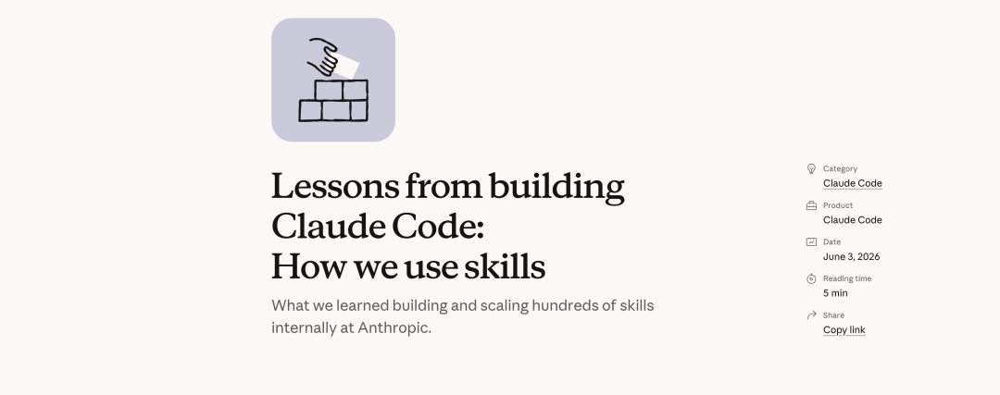

大家好，我是小林。
不知道你有没有这种体验，兴冲冲给 Claude Code 装了一堆 skill，或者自己照着教程写了几个，结果用了一个月，Claude 压根没主动调用过几次。
skill 就这么安静地躺在目录里，像极了你收藏夹里那些「以后一定看」的文章。
问题出在哪？是 skill 这个机制不行吗？
还真不是。
Anthropic 内部光是活跃使用的 skill 就有几百个，他们前几天刚发了一篇博客，把这几百个 skill 沉淀下来的经验一次性全交代了：什么样的 skill 值得做、怎么写 Claude 才会用、团队怎么共享、甚至怎么给 skill 做数据埋点。

我把这篇博客整篇扒了一遍，整理成 7 个问题：
Q1：「skill 不就是一份 markdown 吗？」这可能是最大的误解 Q2：Anthropic 内部几百个 skill，最后只归成了 9 类 Q3：为什么你写的 skill Claude 从来不触发？ Q4：一个 skill 里含金量最高的部分，是「坑点清单」 Q5：skill 还能有记忆、带脚本、挂临时 hook？ Q6：skill 怎么从你的本地走向全团队？ Q7：怎么知道一个 skill 到底有没有人用？
我们一个一个来说。
────Q1：「skill 不就是一份 markdown 吗？」这可能是最大的误解────
先抛个问题：如果让你现在描述一下什么是 skill，你会怎么说？
我猜不少人的答案是：「就是一个写了操作步骤的 markdown 文件，Claude 需要的时候会去读。」
Anthropic 在博客里点名说了，这是他们听到的关于 skill 最常见的误解。
那 skill 到底是什么？官方的定义是：一个文件夹。里面除了那份 SKILL.md，还可以放脚本、参考资料、数据文件、输出模板，Claude 能自己发现、探索和使用这些东西。
一个五脏俱全的 skill 长什么样？拿一个部署服务的 skill 举例，典型的目录结构是这样的：
整个文件夹里只有 SKILL.md 是必需的：文件开头一段 frontmatter 写名字和 description，正文写操作指引。references/、scripts/、assets/ 都是可选的，连名字都不是强制的，按你的需要随便加。
更妙的是，这些子文件不会一股脑塞给 Claude，而是它干活干到哪一步、需要什么材料，才自己去文件夹里翻什么。这个机制 Q3 会专门拆。

打个比方。markdown 文件版的 skill，相当于你给新同事发了一条微信：「部署流程是先这样再那样」。而文件夹版的 skill，相当于你给他一个工位：桌上有操作手册，抽屉里有现成的工具，墙上还贴着前任留下的「这台打印机会卡纸，要先按两下」的便利贴。
哪个更能让新同事快速干活，不用我多说了吧。
而且在 Claude Code 里，skill 还有一堆配置项可以玩，比如绑定特定的触发条件、注册只在 skill 运行期间生效的动态 hook（这个 Q5 细说）。
官方观察下来，内部效果最好的那批 skill，恰恰都是把文件夹结构和配置项用足了的。只写一份 markdown 的 skill，相当于只用了这个机制十分之一的能力。

所以从今天起，请把对 skill 的认知从「一份说明文档」升级成「一个装备齐全的工具箱」。后面 6 个问题，全部建立在这个认知之上。
skill 是文件夹，不是文件。这是用好它的第一步。
────Q2：Anthropic 内部几百个 skill，最后只归成了 9 类────
认知摆正了，下一个问题马上就来：到底什么样的事值得做成 skill？
这个问题特别实际。skill 写起来不难，难的是不知道往哪个方向使劲，写了一堆没用的，真正高频的痛点反而没覆盖。
Anthropic 干了一件很值钱的事：他们把内部几百个 skill 全部拉出来做了一次归类，发现这些 skill 自然聚成了 9 类。

这张分类表怎么用？官方给了一个判断标准：最好的 skill 干干净净落在某一类里；那些想一次干太多事、横跨好几类的 skill，反而会把 agent 搞糊涂。
你可以拿自己的 skill 库对着这 9 类扫一遍，马上能看出两件事：哪些 skill 越界了该拆，哪些类别还是空白该补。
那如果 9 类只能先做一类，从哪类下手？
官方在这里给出了全文最掷地有声的一个结论：验证类 skill 是内部实测对 Claude 输出质量提升最明显的一类。原话甚至说到这个程度：值得专门让一个工程师花一整周，什么都不干，就把验证类 skill 打磨到极致。

为什么是验证类？
你想啊，Claude 写代码的能力已经够强了，真正拉开差距的是它有没有办法确认自己写的东西是对的。没有验证手段，它就只能「我觉得应该没问题」；有了验证 skill，它能开个无头浏览器把注册、邮箱验证、引导页一步步跑完，每一步都断言状态，甚至录一段视频给你看它到底测了什么。
一个会自己验收的 Claude 和一个只会交作业的 Claude，干活质量完全是两个物种。
先别急着写一堆 skill，把「让 Claude 自己验证工作成果」这一件事做好，回报最大。
────Q3：为什么你写的 skill Claude 从来不触发？────
好，分类清楚了，skill 也写了，新问题来了：为什么 Claude 就是不用？
要回答这个问题，得先搞清楚一件事：Claude 是怎么知道「现在该用哪个 skill」的？
肯定有不少人以为，Claude 每次都会把所有 skill 的全文读一遍，然后挑一个合适的。要真是这样，装 50 个 skill，context 当场就被吃光了。
实际的机制聪明得多。我们先讲原理，再看源码。
会话启动的时候，Claude Code 会把所有可用 skill 收集起来，但只取每个 skill 的名字和 description，拼成一张清单注入 context。Claude 平时看到的就只有这张「目录页」。等它判断某个任务匹配上了某个 skill，才会发起调用，这时候 SKILL.md 的全文才被加载进对话。
这套机制有个专门的名字，叫渐进式披露（Progressive Disclosure）：平时只给目录，用到了才给正文。


明白了这个机制，「为什么不触发」的答案就浮出来了：Claude 决定用不用你的 skill，唯一的依据就是那一行 description。
它没读过你的正文，不知道你内容写得多用心。description 没写好，正文写出花来也是白搭。
这就是官方在博客里专门强调的一条：description 不是写给人看的摘要，是写给模型看的触发条件。「帮助处理数据库相关工作」这种写法就是典型的人类视角摘要；模型视角的写法是「当用户要写数据库迁移、修改表结构、或者遇到 migration 报错时使用」。

讲完原理，我去源码里取了证，结果发现真实情况比博客说的还要苛刻。
skill 清单注入 context 是有预算的，而且预算紧得吓人：
这段代码在 src/tools/SkillTool/prompt.ts，两个常量翻译成人话：整张 skill 清单只允许占用 context 窗口的 1%；单个 skill 在清单里的描述最多 250 个字符。
250 个字符之后会发生什么？源码里写得明明白白：
同样在 src/tools/SkillTool/prompt.ts 里，超出 250 字符的部分直接被砍掉，换成一个省略号。你在 description 第 300 个字符处写的精妙触发条件，模型从头到尾就没见过。
更狠的还在后面。如果你装的 skill 太多，把那 1% 的预算挤爆了，Claude Code 会先按比例压缩所有 description；要是还装不下，就直接降级成只显示名字、一个字描述都不留的模式。

这下「装了一堆 skill 反而都不触发」这个怪现象就完全说通了：装得越多，每个 skill 能留在 Claude 眼前的信息就越少，最后大家一起变成一排只有名字的哑巴。
skill 不是收藏品，贵精不贵多。
那调用之后，全文是怎么加载的？源码里这个加载动作是「懒加载」的，只有 skill 真被调用时才执行，而且会在正文前面拼一行很关键的信息：
这段在 src/skills/loadSkillsDir.ts，它在 SKILL.md 全文的最前面加了一句「这个 skill 的根目录在哪里」。
为什么要加这句？这正好解释了 Q1 说的文件夹机制怎么落地：references/、scripts/ 这些文件夹里的东西，系统从头到尾都不会自动加载，是 Claude 拿到根目录地址之后，按 SKILL.md 里的指引，自己用读文件的工具一个个去取的。

所以渐进式披露其实有三层：平时只有 description，调用时才有 SKILL.md 全文，正文里提到的参考文件等 Claude 真需要了才会去读。一层比一层深，每一层都只在必要时打开。

description 的前 250 个字符，决定了你的 skill 是工具还是摆设。
────Q4：一个 skill 里含金量最高的部分，是「坑点清单」────
触发问题解决了，Claude 终于肯打开你的 skill 了。下一个问题：正文该写什么？
先做个小测试。下面两条内容，哪条更值得写进 skill？
第一条：「写完代码后要运行测试，确保所有用例通过。」
第二条：「subscriptions 表是只追加不修改的，你要找的那行记录是 version 最大的那条，不是 created_at 最新的那条。」
答案是第二条，而且不是「略好一点」，是一个天上一个地下。
第一条犯了官方点名的大忌：陈述显而易见的事（don't state the obvious）。Claude 本来就会写代码、本来就会跑测试，你把它默认就会做的事再写一遍，等于往 context 里灌纯噪音，一点增量信息都没有。
官方给的判断标准很直接：如果你的 skill 主要是传授知识，那就只写能把 Claude 推离默认思路的信息。

他们自己有个现成的例子：官方那个前端设计 skill，整篇没教 Claude 怎么写 CSS（它会），而是专门列了一堆「不要做」：不要张口就用 Inter 字体，不要动不动紫色渐变。全是冲着 Claude 的默认审美去纠偏的。
那第二条强在哪？它属于官方说的整个 skill 里信号最强的内容：Gotchas，坑点清单。
什么样的内容算坑点？除了上面那条 subscriptions 表的例子，博客里还给了两个真实例子，感受一下：
「这个字段在 API 网关里叫 @request_id，在计费服务里叫 trace_id，它们是同一个值。」
「staging 环境就算 Stripe 的回调没真正处理，也会返回 200，真实状态要去 payment_events 表里查。」
发现共同点没有？这些信息有一个共同特征：Claude 靠读代码永远推断不出来，只有踩过坑的人才知道。这正是它信号强的原因，每一条都在为 Claude 排掉一个它必然会踩的雷。

而且坑点清单不是一次写完的，官方的玩法是持续攒：每次 Claude 用这个 skill 又栽进一个新坑，就回头把这个坑补进去。skill 就这样越用越准。
不过正文也不是写得越细越好，这里有个度要把握。官方专门提醒了一个反方向的坑，叫别把 Claude 锁死在轨道上（avoid railroading）。
Claude 对指令的服从度是很高的，你把步骤写得太死，它遇到指令没覆盖的情况就容易僵在轨道上硬开，明明该随机应变的地方也不敢变。正确的姿势是：把它需要的信息给足，把怎么走的自由留给它。

skill 正文的黄金法则：只写 Claude 推断不出来的，删掉它本来就会的。
────Q5：skill 还能有记忆、带脚本、挂临时 hook？────
把 Q4 的内功练好，你的 skill 已经能打了。这一节说三个高阶玩法，全部来自 Anthropic 内部的实战，一个比一个超出「skill 就是文档」的想象。
玩法一：给 skill 装记忆
先想一个场景：你做了一个自动写站会日报的 skill，今天跑一次，明天跑一次。问题来了，它怎么知道哪些内容昨天已经汇报过了？
每次会话都是新开的，Claude 不记得上一次执行的任何事。难道每天的日报都从头把所有进展再说一遍？
官方的解法很朴素：让 skill 把执行结果存在自己的文件夹里。比如日报 skill 维护一个日志文件，每发一次日报就追加一条记录。下次执行时，Claude 先读自己的历史，自然就知道「只汇报昨天之后的增量」。
简单的场景用追加式的文本日志或 JSON 就够了，复杂的甚至可以塞一个 SQLite 数据库进去。

那这些数据该存在哪？官方专门为这件事准备了一个稳定的数据目录，在 skill 里通过环境变量 CLAUDE_PLUGIN_DATA 就能拿到。
这个目录最大的特点是持久：plugin 升级换版本都不会被清掉，只有彻底卸载时才会删除。也就是说，你的 skill 记忆可以放心地活得比 skill 版本更久。

记忆这个思路还有个变种用法：存配置。
有些 skill 第一次用之前，需要先从用户那里要点信息。还是拿日报 skill 举例，它总得知道日报要发到哪个频道吧？这种信息不该写死在 SKILL.md 里（不然没法分发给别人用），也不该每次执行都问一遍（烦死人）。
官方给的模式是：把这类信息存进 skill 目录下的一个 config.json。Claude 每次执行先看配置在不在，在就直接用；不在就说明是第一次跑，主动找用户把信息问齐、写进配置，下次就不用再问了。
相当于给 skill 加了一个「首次使用引导」。要是想问得更体面，还可以在 skill 里指明让 Claude 用选择题的形式来收集，用户点一下就配置完了。

玩法二：把脚本喂给 Claude，让它只管编排
官方有一句话我特别认同：你能给 Claude 最有力的工具就是代码。
什么意思？假设你的数据分析 skill 里什么都不放，Claude 每次分析都要现场手写「怎么连数据源、怎么拼查询、怎么算留存」这一整套样板代码，又慢又容易错。
但如果 skill 里预先放好一个函数库，取数、清洗、对比这些底层活全部封装成现成的函数，Claude 的每一个回合就都花在刀刃上：思考接下来该组合哪几个函数，而不是重新发明轮子。
你问一句「周二的数据怎么了」，它现场写一段十几行的小脚本，把你的函数库组合起来跑出答案。

玩法三：挂只在 skill 激活期间生效的 hook
这是三个玩法里最容易被忽略、但想象空间最大的一个：skill 可以自带 hook，而且这种 hook 只在 skill 被调用时注册，会话结束就失效。
为什么这个设计很妙？想想官方给的两个例子。
一个叫 careful 的 skill：激活后自动阻断 rm -rf、DROP TABLE、强制推送这类危险命令。这种拦截要是常驻开着，开发体验能把人逼疯；但在你明确知道「我现在要碰生产环境」的时刻，手动激活它，就是一道恰到好处的保险。
另一个叫 freeze 的 skill：激活后禁止修改指定目录之外的任何文件。专治排查 bug 时的「我只是想加两行日志，结果 Claude 顺手把无关代码也给修了」。

用法也很轻：这类 hook 直接在 skill 的 frontmatter 里声明就行，skill 被调用时自动注册，会话结束自动失效，不需要你去碰全局的 hook 配置。
skill 的上限不是一份好文档，是一个带记忆、带工具、带保险丝的小型工作系统。
────Q6：skill 怎么从你的本地走向全团队？────
一个人把 skill 玩明白了，价值是 1；让整个团队都用上，价值才是 N。但一到团队层面，马上冒出三个新问题：怎么分发？谁来审批？质量怎么保证？
先说分发。官方给了两条路。
第一条路：把 skill 直接提交进代码仓库，放在 .claude/skills 目录下。团队成员拉代码的时候 skill 就跟着到位了，零成本同步。小团队、仓库不多的场景，这条路最省事。
但还记得 Q3 说的那个 1% 预算吗？这条路有个隐性代价：仓库里每多一个 skill，每个人每次会话的清单里就多一行，所有人无差别承担这份 context 开销，不管用不用得上。
所以规模一上来，官方推荐第二条路：做成 plugin，搭一个团队内部的 plugin marketplace。skill 打包上架，谁需要谁安装，context 成本回归到「谁用谁付」。新人入职装一遍团队插件，立刻获得和老员工一样的装备。

那 marketplace 谁说了算？哪些 skill 能上架？
Anthropic 内部的答案可能跟你想的不一样：没有一个中心化的团队做审批。
他们的玩法是完全的自然演化：你写了个 skill 想给大家试试，先扔进 GitHub 上的一个沙盒文件夹，在 Slack 里吆喝一声。用的人多了、口碑起来了（火没火由 skill 作者自己判断），作者再提一个 PR 把它从沙盒挪进正式 marketplace。

像不像开源社区的运作方式？好东西靠口碑自己长出来，而不是靠委员会评出来。审批环节越重，愿意分享的人越少；门槛低到「扔进沙盒就行」，几百个 skill 才攒得起来。

还有一个团队场景下绕不开的小问题：skill 之间能不能互相依赖？比如一个生成 CSV 的 skill，最后一步要调用另一个文件上传 skill。
官方很坦诚：依赖管理目前没有原生支持。但解法意外地简单，在 skill 正文里直接报另一个 skill 的名字就行，只要对方装了，模型自己会去调用。毕竟执行者是一个能理解自然语言的 agent，「用 file-upload skill 把结果传上去」这句话本身就是依赖声明。

好 skill 的团队化路径：沙盒里长出来，口碑里筛出来，marketplace 里沉淀下来。
────Q7：怎么知道一个 skill 到底有没有人用？────
最后一个问题，也是大多数团队压根没意识到要问的问题。
skill 攒了几十个，marketplace 也搭起来了，然后呢？哪些 skill 天天被调用，哪些写完就成了仓库里的化石？没有数据，你只能靠感觉。
靠感觉的结果通常是：大家继续给没人用的 skill 添砖加瓦，真正高频的 skill 反而没人维护。
Anthropic 的做法是给 skill 做埋点，思路相当巧妙：用一个 PreToolUse hook 监听 skill 工具的每一次调用，把「谁在什么时候用了哪个 skill」记录下来，汇总成公司内部的使用统计。
相当于给每个 skill 装了个计数器，数据一拉出来，两类问题立刻现形。
一类是「受欢迎的 skill」：调用量大，值得重点维护、优先打磨，Q2 说的「派工程师花一周打磨验证 skill」这种投入，就该花在这类 skill 上。
另一类更有意思，叫触发不足（undertriggering）：你预期它该被高频使用，数据却显示几乎没人碰。这种 skill 八成是 Q3 的病，description 没写对，模型扫一眼清单根本想不起它。数据帮你把「该触发却没触发」的病人筛出来，再回头去修 description，形成闭环。

这件事的成本低到没有借口不做：一个 hook、一段日志脚本，官方连示例代码都开源出来了。但它把 skill 建设从「凭感觉做」变成了「看数据做」，这是个质变。
不被度量的 skill 库，迟早变成没人敢动也没人想用的杂物间。
────最后────
7 个问题说完了，按惯例浓缩成 3 句话送你：

第一，skill 是文件夹不是文件，把脚本、坑点清单、记忆文件、临时 hook 都用上，它才是一个完整的工作系统。
第二，决定 skill 命运的是 description 的前 250 个字符，写成「什么场景下用我」的触发条件，而不是给人看的摘要；装太多 skill 会互相挤占清单预算，贵精不贵多。
第三，如果只做一件事，先做验证类 skill，让 Claude 能自己确认工作成果，这是 Anthropic 实测回报最大的投入。
博客的结尾有一句话我很喜欢，也送给准备动手的你：他们内部最好的那批 skill，几乎都是从「几行字加一个坑点」开始的，然后随着 Claude 撞上一个个新的边界情况，被人一点点喂大。
如果这篇文章对你有帮助，记得点个赞、在看、转发三连，感谢林友们的支持！
我们下篇见啦。
────参考资料────
Anthropic 博客《Lessons from building Claude Code: How we use skills》：https://claude.com/blog/lessons-from-building-claude-code-how-we-use-skills Claude Code skill 官方文档：https://code.claude.com/docs/en/skills 官方示例 skill 仓库：https://github.com/anthropics/skills
推荐阅读：
万字长文图解 Claude Code ｜ 怎么写好 CLAUDE.md